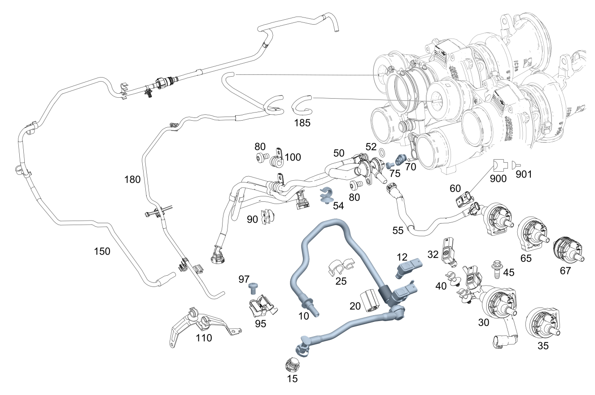

| № | Артикул | Название | Кол. | Примечание | Ограничение |
|---|---|---|---|---|---|
| 10 | A 177 010 33 00 | Трубопровод регенерации (REGENERIERLEITUNG) | 1 | Слева | -(ME10/F232) |
| 10 | A 177 010 35 00 | Трубопровод регенерации (REGENERIERLEITUNG) | 1 | Слева | F093/(F205/F253)+(805/806/807/808/809/800)+-ME10 |
| 10 | A 177 010 53 08 | Трубопровод регенерации (REGENERIERLEITUNG) | 1 | Слева | (F205/F253)+-(805/806/807/808/809/800) |
| 10 | A 177 010 33 00 | Трубопровод регенерации (REGENERIERLEITUNG) | 1 | Слева | |
| 10 | A 177 010 35 00 | Трубопровод регенерации (REGENERIERLEITUNG) | 1 | Слева | F093/F205/F253 |
| 10 | A 177 010 53 08 | Трубопровод регенерации (REGENERIERLEITUNG) | 1 | Слева | (F205/F253)+801 |
| 10 | A 177 010 53 08 | Трубопровод регенерации (REGENERIERLEITUNG) | 1 | Слева | F205/F253 |
| 12 | A 000 905 50 02 | - Датчик давления (DRUCKSENSOR) | 1 | (F205/F253)+801 | |
| 12 | A 000 905 50 02 | - Датчик давления (DRUCKSENSOR) | 1 | F205/F253 | |
| 15 | A 000 998 27 95 | Поворотный затвор (DREHVERSCHLUSS) | 1 | F093+-M014+-M005/F205/F253 | |
| 20 | A 001 997 06 44 | Проставочное кольцо (ABSTANDSRING) | 1 | F093/F253/F205+(805/806/807/808/809/800) | |
| 25 | A 001 995 32 65 | хомут (SCHELLE) | 1 | К трубопроводу регенерации | -(F205/F206) |
| 30 | A 177 010 36 03 | Трубопровод регенерации (REGENERIERLEITUNG) | 1 | Левая сторона, без клапана системы замкнутой вентиляции топливного бака | (F213/F290/F463)+598 |
| 30 | A 177 010 15 03 | Трубопровод регенерации (REGENERIERLEITUNG) | 1 | Левая сторона, без клапана системы замкнутой вентиляции топливного бака | F213/F290/F463 |
| 30 | A 177 010 15 03 | Трубопровод регенерации (REGENERIERLEITUNG) | 1 | Левая сторона, без клапана системы замкнутой вентиляции топливного бака | F290+830+800+050/F290+830+(598/961)+800+050 |
| 30 | A 177 010 52 05 | Трубопровод регенерации (REGENERIERLEITUNG) | 1 | Лев., с клапаном системы замкнутой вентиляции топливного бака | F167/F217/F222 |
| 30 | A 177 010 52 05 | Трубопровод регенерации (REGENERIERLEITUNG) | 1 | Лев., с клапаном системы замкнутой вентиляции топливного бака | F217/F222 |
| 30 | A 177 010 52 05 | Трубопровод регенерации (REGENERIERLEITUNG) | 1 | Лев., с клапаном системы замкнутой вентиляции топливного бака | F167+FX+803+053 |
| 30 | A 177 010 33 04 | Трубопровод регенерации (REGENERIERLEITUNG) | 1 | Левая сторона, без клапана системы замкнутой вентиляции топливного бака | F167 |
| 30 | A 177 010 51 05 | Трубопровод регенерации (REGENERIERLEITUNG) | 1 | Лев., с клапаном системы замкнутой вентиляции топливного бака | (F217/F222)+598 |
| 30 | A 177 010 92 10 | Трубопровод регенерации (REGENERIERLEITUNG) | 1 | Лев., с клапаном системы замкнутой вентиляции топливного бака | F167+(803+053/804/805) |
| 30 | A 177 010 92 10 | Трубопровод регенерации (REGENERIERLEITUNG) | 1 | Лев., с клапаном системы замкнутой вентиляции топливного бака | F167 |
| 30 | A 177 010 54 12 | Трубопровод регенерации (REGENERIERLEITUNG) | 1 | Левая сторона, без клапана системы замкнутой вентиляции топливного бака | F290+(804/805/806/807/808) |
| 30 | A 177 010 15 03 | Трубопровод регенерации (REGENERIERLEITUNG) | 1 | Левая сторона, без клапана системы замкнутой вентиляции топливного бака | -(F093/F205/F206/F213/F253/F290/F463) |
| 30 | A 177 010 36 03 | Трубопровод регенерации (REGENERIERLEITUNG) | 1 | Левая сторона, без клапана системы замкнутой вентиляции топливного бака | -(F093/F205/F206/F213/F253/F290/F463) |
| 30 | A 177 010 36 03 | Трубопровод регенерации (REGENERIERLEITUNG) | 1 | Левая сторона, без клапана системы замкнутой вентиляции топливного бака | (F213/F290/F463)+598 |
| 30 | A 177 010 33 04 | Трубопровод регенерации (REGENERIERLEITUNG) | 1 | Левая сторона, без клапана системы замкнутой вентиляции топливного бака | F167/F206/F214/F217/F222/F223/F232 |
| 30 | A 177 010 32 04 | Трубопровод регенерации (REGENERIERLEITUNG) | 1 | Левая сторона, без клапана системы замкнутой вентиляции топливного бака | (F167/F206/F214/F217/F222/F223/F232)+598 |
| 30 | A 177 010 11 02 | Трубопровод регенерации (REGENERIERLEITUNG) | 1 | Справа, без клапана системы замкнутой вентиляции топливного бака | -(F093/F205/F253) |
| 30 | A 177 010 11 02 | Трубопровод регенерации (REGENERIERLEITUNG) | 1 | Справа, без клапана системы замкнутой вентиляции топливного бака | 460/494/830/835 |
| 30 | A 177 010 31 04 | Трубопровод регенерации (REGENERIERLEITUNG) | 1 | Справа, без клапана системы замкнутой вентиляции топливного бака | F167/F223/F232 |
| 30 | A 177 010 37 03 | Трубопровод регенерации (REGENERIERLEITUNG) | 1 | Справа, без клапана системы замкнутой вентиляции топливного бака | -(F093/F205/F253) |
| 32 | A 000 905 50 02 | - Датчик давления (DRUCKSENSOR) | 1 | -(F205/F253/598) | |
| 35 | A 001 470 11 93 | - Клапан вентиляции бака (REGENERIERVENTIL) | 1 | F167/F217/F222 | |
| 40 | A 004 995 48 77 | Крепеж (трубо)провода (LEITUNGSBEFESTIGER) | 1 | ||
| 40 | A 004 995 48 77 | Крепеж (трубо)провода (LEITUNGSBEFESTIGER) | 1 | F167 | |
| 45 | N 910143 006001 | Винт с 6-гр. глвк (SECHSRUNDSCHRAUBE) | 1 | К кронштейну охладителя наддувочного воздуха; M6X16 | F167/F223/F232 |
| 45 | N 000000 002439 | Винт с 6-гр. глвк (SECHSRUNDSCHRAUBE) | 2 | К кронштейну охладителя наддувочного воздуха; M6X25 | F167/F217/F222 |
| 50 | A 177 010 81 04 | Трубопровод регенерации (REGENERIERLEITUNG) | 1 | Слева [414] СТАРУЮ ДЕТАЛЬ УСТАНАВЛИВАТЬ БОЛЬШЕ НЕ РАЗРЕШАЕТСЯ | (805/806/807/808/809/800)+-(F093/F205/F253) |
| 50 | A 177 010 34 07 | Трубопровод регенерации (REGENERIERLEITUNG) | 1 | Слева | (805/806/807/808/809/800)+-(F093/F205/F253) |
| 50 | A 177 010 02 08 | Трубопровод регенерации (REGENERIERLEITUNG) | 1 | Слева | (805/806/807/808/809/800)+-(F093/F205/F253) |
| 50 | A 177 010 02 08 | Трубопровод регенерации (REGENERIERLEITUNG) | 1 | Слева | F167/F213/F217/F222/F290/F463/F093+M014+M005 |
| 50 | A 177 010 02 08 | Трубопровод регенерации (REGENERIERLEITUNG) | 1 | Слева | 801/F463+800+050 |
| 50 | A 177 010 02 08 | Трубопровод регенерации (REGENERIERLEITUNG) | 1 | Слева | (F167/F213/F217/F222/F290/F093+M014+M005)+801/F463+800+050 |
| 50 | A 177 010 02 08 | Трубопровод регенерации (REGENERIERLEITUNG) | 1 | Слева | F167/F213/F217/F222/F290/F463/F465/F093+M014+M005 |
| 50 | A 177 010 02 08 | Трубопровод регенерации (REGENERIERLEITUNG) | 1 | Слева | F167/F213/F217/F222/F290/F463/F093+M014+M005 |
| 50 | A 177 010 77 14 | Трубопровод регенерации (REGENERIERLEITUNG) | 1 | Слева | F167/F213/F217/F222/F290/F463/F093+M014+M005 |
| 50 | A 177 010 13 02 | Трубопровод регенерации (REGENERIERLEITUNG) | 1 | Слева | -(F093/F205/F206/F253) |
| 50 | A 177 010 34 00 | Трубопровод регенерации | 1 | Справа | |
| 50 | A 177 010 54 04 | Трубопровод регенерации (REGENERIERLEITUNG) | 1 | Справа [414] СТАРУЮ ДЕТАЛЬ УСТАНАВЛИВАТЬ БОЛЬШЕ НЕ РАЗРЕШАЕТСЯ | |
| 50 | A 177 010 82 04 | Трубопровод регенерации (REGENERIERLEITUNG) | 1 | Справа | |
| 50 | A 177 010 36 00 | Трубопровод регенерации (REGENERIERLEITUNG) | 1 | Справа | F093/F205/F253 |
| 50 | A 177 010 30 06 | Трубопровод регенерации (REGENERIERLEITUNG) | 1 | Справа | F093/F205/F253 |
| 52 | A 025 997 95 45 | - Кольцевая прокладка (O-RING) | 2 | 10X2.5 | -(F205/F206/F253/ME10/F093+M016/F232) |
| 54 | A 001 995 87 77 | Держатель шланга (LEITUNGSHALTER) | 2 | F167/F213/F217/F222/F290/F463/F093+M014+M005 | |
| 55 | A 177 010 11 02 | Трубопровод регенерации (REGENERIERLEITUNG) | 1 | Справа, без клапана системы замкнутой вентиляции топливного бака | F290+830+800+050/F290+830+(598/961)+800+050 |
| 55 | A 177 010 31 04 | Трубопровод регенерации (REGENERIERLEITUNG) | 1 | Прав., с клапаном системы замкнутой вентиляции топливного бака | F167/F206/F214/F217/F222/F223/F232 |
| 55 | A 177 010 30 04 | Трубопровод регенерации (REGENERIERLEITUNG) | 1 | Прав., с клапаном системы замкнутой вентиляции топливного бака | (F167/F206/F214/F217/F222/F223/F232)+598 |
| 55 | A 177 010 49 05 | Трубопровод регенерации (REGENERIERLEITUNG) | 1 | Прав., с клапаном системы замкнутой вентиляции топливного бака | (F217/F222)+598 |
| 55 | A 177 010 49 05 | Трубопровод регенерации (REGENERIERLEITUNG) | 1 | Прав., с клапаном системы замкнутой вентиляции топливного бака | (F217/F222)+598 |
| 55 | A 177 010 49 05 | Трубопровод регенерации (REGENERIERLEITUNG) | 1 | Прав., с клапаном системы замкнутой вентиляции топливного бака | F167+961 |
| 55 | A 177 010 31 04 | Трубопровод регенерации (REGENERIERLEITUNG) | 1 | Прав., с клапаном системы замкнутой вентиляции топливного бака | F167 |
| 55 | A 177 010 93 10 | Трубопровод регенерации (REGENERIERLEITUNG) | 1 | Прав., с клапаном системы замкнутой вентиляции топливного бака | F167+(803+053/804/805) |
| 55 | A 177 010 93 10 | Трубопровод регенерации (REGENERIERLEITUNG) | 1 | Прав., с клапаном системы замкнутой вентиляции топливного бака | F167 |
| 55 | A 177 010 55 12 | Трубопровод регенерации (REGENERIERLEITUNG) | 1 | Справа, без клапана системы замкнутой вентиляции топливного бака | F290+(804/805/806/807/808) |
| 55 | A 177 010 50 05 | Трубопровод регенерации (REGENERIERLEITUNG) | 1 | Прав., с клапаном системы замкнутой вентиляции топливного бака | F167/F217/F222 |
| 55 | A 177 010 50 05 | Трубопровод регенерации (REGENERIERLEITUNG) | 1 | Прав., с клапаном системы замкнутой вентиляции топливного бака | F217/F222 |
| 55 | A 177 010 50 05 | Трубопровод регенерации (REGENERIERLEITUNG) | 1 | Прав., с клапаном системы замкнутой вентиляции топливного бака | F167+FX+803+053 |
| 55 | A 177 010 11 02 | Трубопровод регенерации (REGENERIERLEITUNG) | 1 | Справа, без клапана системы замкнутой вентиляции топливного бака | F213/F290/F463 |
| 60 | A 000 905 50 02 | - Датчик давления (DRUCKSENSOR) | 1 | К трубопроводу регенерации | ME10/F093+M016/F232 |
| 65 | A 001 470 08 93 | - Клапан вентиляции бака (REGENERIERVENTIL) | 1 | Справа | F167/F217/F222/F223/F232/ME10 |
| 65 | A 001 470 11 93 | - Клапан вентиляции бака (REGENERIERVENTIL) | 1 | Слева | F167/F217/F222/F223/F232 |
| 67 | A 001 476 44 32 | - Клапан вентиляции бака (REGENERIERVENTIL) | 1 | Справа | F167/F217/F222/F223/F232/ME10 |
| 67 | A 001 476 44 32 | - Клапан вентиляции бака (REGENERIERVENTIL) | 1 | Слева | F167 |
| 70 | A 177 271 00 00 | Запорная крышка (VERSCHLUSSDECKEL) | 1 | Вентиляционный трубопровод слева | (F093/F205/F253) |
| 75 | N 000000 001144 | Винт с 6-гр. глвк (SECHSRUNDSCHRAUBE) | 1 | M6X10 | F167/F213/F217/F222/F290/F463/F093+M014+M005 |
| 80 | N 000000 001144 | Винт с 6-гр. глвк (SECHSRUNDSCHRAUBE) | 3 | Крепление трубопровода регенерации; M6X10 | F167/F213/F217/F222/F290/F463/F093+M014+M005 |
| 80 | N 000000 001144 | Винт с 6-гр. глвк (SECHSRUNDSCHRAUBE) | 1 | Крепление трубопровода системы замкнутой вентиляции топливного бака к вентиляционному трубопроводу слева; M6X10 | F167/F213/F217/F222/F290/F463/F093+M014+M005 |
| 80 | N 000000 001144 | Винт с 6-гр. глвк (SECHSRUNDSCHRAUBE) | 1 | К термостату; M6X10 | |
| 80 | N 000000 001144 | Винт с 6-гр. глвк (SECHSRUNDSCHRAUBE) | 2 | К термостату; M6X10 | F093/F205/F253 |
| 80 | A 000 990 61 37 | Винт с 6-гр. глвк (SECHSRUNDSCHRAUBE) | 1 | К маслоотделителю; M6X16 | (F213/F222/F217/F167/F290/F463/F093+M014+M005)+-ME10 |
| 80 | N 000000 001144 | Винт с 6-гр. глвк (SECHSRUNDSCHRAUBE) | 1 | Крепление трубопровода регенерации; M6X10 | -(F205/F253) |
| 80 | N 910143 006001 | Винт с 6-гр. глвк (SECHSRUNDSCHRAUBE) | 1 | К кронштейну охладителя наддувочного воздуха; M6X16 | F167 |
| 80 | N 000000 001144 | Винт с 6-гр. глвк (SECHSRUNDSCHRAUBE) | 1 | Крепление трубопровода системы замкнутой вентиляции топливного бака (левая сторона); M6X10 | (F167/F290)+(805/806/807) |
| 80 | N 000000 001144 | Винт с 6-гр. глвк (SECHSRUNDSCHRAUBE) | 1 | Крепление трубопровода системы замкнутой вентиляции топливного бака (левая сторона); M6X10 | (F167/F290)+(805/806/807/808) |
| 90 | A 000 995 34 75 | Держатель (HALTER) | 2 | К трубопроводу регенерации | F093/F205/F206/F253 |
| 95 | A 177 010 73 01 | Держатель (HALTER) | 2 | Трубопровод системы замкнутой вентиляции топливного бака | |
| 95 | A 177 010 57 04 | Держатель (HALTER) | 2 | Трубопровод системы замкнутой вентиляции топливного бака | |
| 95 | A 177 010 73 01 | Держатель (HALTER) | 1 | Трубопровод системы замкнутой вентиляции топливного бака | F093/F205/F206/F253 |
| 95 | A 177 010 57 04 | Держатель (HALTER) | 1 | Трубопровод системы замкнутой вентиляции топливного бака | F093/F205/F253 |
| 95 | A 177 010 58 04 | Держатель (HALTER) | 1 | Трубопровод системы замкнутой вентиляции топливного бака | F167/F217/F222 |
| 95 | A 177 010 84 06 | Держатель (HALTER) | 1 | Трубопровод системы замкнутой вентиляции топливного бака | ME10/F232/F093+M016 |
| 97 | N 000000 001144 | Винт с 6-гр. глвк (SECHSRUNDSCHRAUBE) | 2 | M6X10 | F213/F290/F463/F093+M014+M005 |
| 97 | N 000000 002439 | Винт с 6-гр. глвк (SECHSRUNDSCHRAUBE) | 2 | M6X25 | F167/F217/F222 |
| 100 | N 000000 001045 | Хомут (SCHELLE) | 2 | 10/15 | |
| 100 | N 000000 001045 | Хомут (SCHELLE) | 1 | 10/15 | F093/F205/F206 |
| 110 | A 177 010 47 01 | Держатель (HALTER) | 1 | F463 | |
| 150 | A 177 140 03 00 | Вакуумный трубопровод (UNTERDRUCKLEITUNG) | 1 | Вакуумный насос к преобразователю давления | |
| 150 | A 177 140 04 64 | Вакуумный трубопровод (UNTERDRUCKLEITUNG) | 1 | Вакуумный насос к преобразователю давления | F205/F206 |
| 150 | A 177 140 23 64 | Вакуумный трубопровод (UNTERDRUCKLEITUNG) | 1 | Вакуумный насос к преобразователю давления | F093/F205/F253 |
| 150 | A 176 140 01 00 | Вакуумный трубопровод (UNTERDRUCKLEITUNG) | 1 | Вакуумный насос к преобразователю давления | F093/F205/F253 |
| 150 | A 177 140 58 00 | Вакуумный трубопровод (UNTERDRUCKLEITUNG) | 1 | Вакуумный насос к преобразователю давления | ME10/F232/F093+M016 |
| 180 | A 177 140 09 64 | Вакуумный трубопровод (UNTERDRUCKLEITUNG) | 1 | Преобразователь давления к вакуумной камере | |
| 180 | A 177 140 04 00 | Вакуумный трубопровод (UNTERDRUCKLEITUNG) | 1 | Преобразователь давления к вакуумной камере | |
| 180 | A 177 140 19 64 | Вакуумный трубопровод (UNTERDRUCKLEITUNG) | 1 | Преобразователь давления к вакуумной камере | F205/F206 |
| 180 | A 177 140 24 64 | Вакуумный трубопровод (UNTERDRUCKLEITUNG) | 1 | Преобразователь давления к вакуумной камере | F093/F205/F206 |
| 180 | A 177 140 00 00 | Вакуумный трубопровод (UNTERDRUCKLEITUNG) | 1 | Преобразователь давления к вакуумной камере | F093/F205/F253 |
| 180 | A 176 140 02 00 | Вакуумный трубопровод (UNTERDRUCKLEITUNG) | 1 | Преобразователь давления к вакуумной камере | F093/F205/F253 |
| 185 | A 177 142 06 00 | Вакуумный трубопровод (UNTERDRUCKLEITUNG) | 1 | Преобразователь давления к вакуумной камере | -(F205/F206) |
| 900 | A 006 540 22 81 | Сцепление, механическое (KUPPLUNG, MECHANISCH) | 1 | Датчик давления регенерации B4/4; 3\-PIN MQS | |
| 901 | A 001 545 50 80 | Уплотнение провода (EINZELADERABDICHTUNG) | NB | Желтый; 0.22\-1.0 MM2 MLK1.2 | |
| 901 | A 003 982 68 26 | Контактная втулка (KONTAKTBUCHSE) | NB | 0.35 MM2 MLK1.2SM ELA |
Позиций: 112 · подписано на схемах: 112 · колесо — плавный зум в курсор, перетаскивание — пан, двойной клик — зум, клик по артикулу — скопировать.